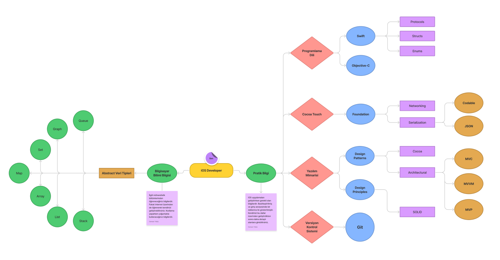
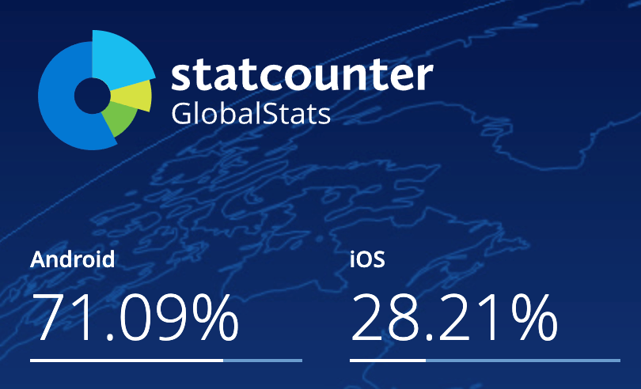
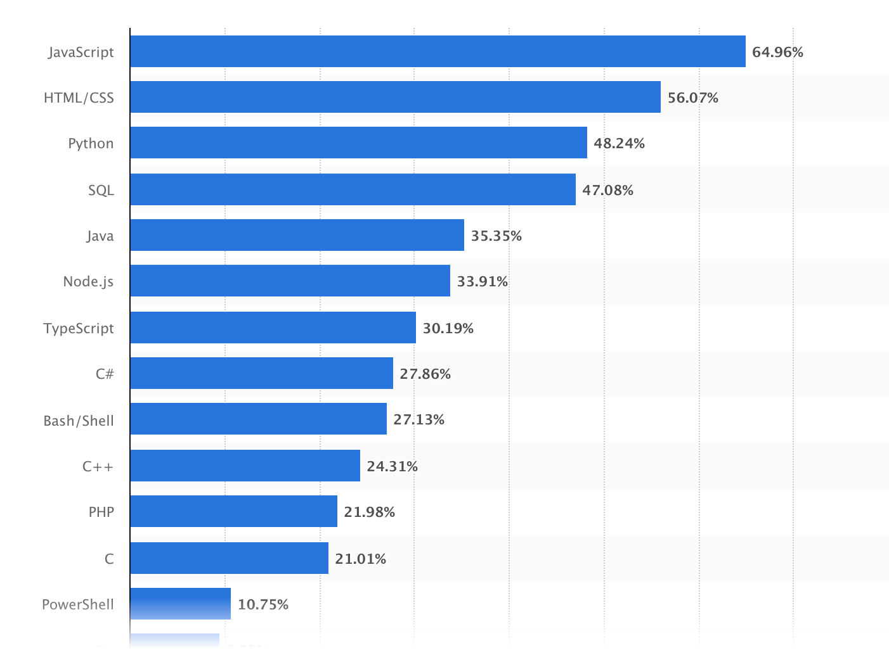

Mobil uygulama konusunda kendini geliştirmek isteyenler için bir kaç farklı yol vardır. Burada her biri ayrı ayrı anlatılacaktır. Bunlar iOS DEVELOPER YOL HARİTASI ve ANDROİD (KOTLİN) DEVELOPER YOL HARİTASI olacaktır.
iOS DEVELOPER YOL HARİTASI
Yazılıma veya mobil uygulama geliştirmeye başlamak isteyen arkadaşların kafalarındaki ilk soru nereden başlamalıyım olmaktadır.Yazılıma dair hiç bilginiz olmasa bile aşağıdaki yol haritasını izleyerek fikir sahibi olabilirsiniz.
Nereden başlamalıyım?Bu yazımızda ağırlıklı olarak iOS uygulama geliştirme üzerine konuşacağız fakat diğer alanlar da ilginizi çekebilir ve bu alanlara yönelmek isteyebilirsiniz. Bu yüzden diğer alanlar hakkında da bilgi edinmeniz adına Maraş Teknoloji Üssü olarak yayınladığımız diğer yol haritalarını da okuyabilirsiniz. Bu yol haritalarını inceleyerek nereden başlamalıyım sorusuna daha kapsamlı bir cevap bulabilirsiniz.
iOS Developer aslında Mobile Application Developer (Mobil Uygulama Geliştiricisi) olarak da geçmektedir. Fakat Mobile App. Developer de kendi arasında iOS Developer, Android Developer, Flutter Developer gibi çok daha fazla alt alanlara ayrılmaktadır. Bu yazıda sizlere ios developer yol haritası çizilmiş olacaktır.
iOS Developer olmak için gereklilikler?Diğer alanlardan farklı olarak her bilgisayarda iOS uygulama geliştirme imkanı maalesef bulunmamaktadır. Sadece macOS işletim sistemi olan cihazlarda geliştirme yapılabilmektedir. Aslında bu durumun hem avantajları, hem de dezavantajları vadır. Türkiye’de macOS işletim sistemini kullanan kullanıcıların payı %10 ile %15 arasındadır. Herkesin rahatlıkla geliştirmeye başlayabileceği bir alan olmadığı için bu size avantaj sağlamaktadır. Fakat Windows veya Linux işletim sistemi kullanıyorsanız macOS işletim sistemi olan cihazlara geçmelisiniz. (Macbook, Mac mini, iMac vs.)
iOS Developer olmak için öncelikle bir yazılım dili seçmeniz gerekmektedir. Dilin yayıncıları tarafından desteği, sektördeki yeri, öğretici dokümanları vb. kriterleri önemlidir. Bu yazımızda Native diller üzerinden bilgiler sağlayacağız. Hibrit mobil uygulama geliştirme dilleri de mevcuttur.
Native iOS uygulama geliştirmek için seçilebilecek diller- Swift
- Objective-C
- Dart (Flutter)
- JS (ReactNative)
Swift, Apple tarafından iOS ve macOS platformlarına (iOS ve Mac) uygulamaları geliştirmek için çıkarılmış bir nesne tabanlı programlama dilidir. İlk çıkış yılı 2014’tür. Swift öncesinde iOS uygulama geliştirmek isteseydiniz Objective-C kullanmanız gerekmekteydi. Fakat günümüz teknoloji şirketleri Swift programlama diline yöneldiği için Objective-C dilini öğrenmek sizi geride bırakacaktır. Yazılım sektöründe tutunmak için güncel teknolojileri takip edip yeniliklere açık olmak gerekmektedir. WWDC 2019 konferansında SwiftUI framework’u yayınlanmıştır. Muhtemeldir ki, önümüzdeki bir kaç yıl içerisinde teknoloji şirketleri bu framework’e geçiş yapacaktır (SwiftUI bir programlama dili değil, frameworktür.). Eğer Native iOS uygulama geliştirmeye başlamak istiyorsanız en güncel ve popüler olan Swift dilini seçmeniz sizin için daha iyi olacaktır.

Programlama dili ile uygulama geliştirmek için kullanabileceğimiz IDE’lerin başında Xcode gelmektedir. Başka IDE’ler de kullanabilirsiniz fakat Swift dilini kullanıyorsanız ve Storyboard üzerinde tasarım yapmak istiyorsanız Xcode üzerinde açmanız gerekmektedir.
iOS Developer olmak için nereden başlamalıyım?Herhangi bir yazılım dilini kitaplardan okuyarak, video izleyerek veya makale okuyarak öğrenemezsiniz. Sadece bilgi sahibi olabilirsiniz. Okuduğunuz veya izlediğiniz şeyler ile uygulama geliştirmeniz gerekmektedir. Ayrıca türkçe kaynaklarda bulamadığınız soruların cevabını ingilizce araştırarak rahatlıkla bulabilirsiniz.
Video izleyerek bilgi sahibi olacağınız platformlar- Udemy Platformu
- Youtube üzerinden Sean Allen, Code With Chris, Let’s Learn Swift (Türkçe Kaynak ) gibi dersler takip edilebilir.
- weheartswift.com
- hackingwithswift.com
- stackoverflow.com (Uygulama geliştirken aldığınız hataların cevabını bulabileceğiniz platform)
- raywenderlich.com
İlk defa bir programlama dili öğrenmeye başlıyorsanız temellerini öğrenmeniz gerekmektedir. Öğrenirken sürekliliği korumanız daha önceki öğrendiğiniz bilgileri pekiştirmenize yarayacaktır. Aşağıdaki yol haritası sıfırdan başlayıp bir iş sahibi olabileceğiniz düzeyde şekillendirilmiştir. Daha kapsamlı yol haritalarını internet üzerinden de araştırarak rahatlıkla bulabilirsiniz.
ANDROİD (KOTLİN) DEVELOPER YOL HARİTASI
Teknolojinin her geçen gün katlanarak büyümesi birçok sektörde büyük değişikliklere neden oldu. Bunun en büyük örneklerinden birisi de telefonların bu kadar yaygınlaşmasıdır. Telefonların hızla yaygınlaşmasıyla beraber mobil sektörü çok büyük büyümeler gösterdi ve akıllı telefonlar artık bizler için vazgeçilmez oldu. Durum böyle olunca da bu sektörde birçok iş imkânı doğdu. Bunlardan biri de Mobil Geliştiriciliktir(Mobile App Developer)
Mobil geliştirme platform olarak ikiye ayrılır;- Native Platform: Bu platformu kısaca her bir işletim sistemi için farklı bir kodlama dili kullanmak gibi düşünebilirsiniz. Örnek olarak; iOS için Swift/SwiftUI, Android için Java/Kotlin.
- Cross Platform: Bu platformu kısaca bir kodlama dili ile birden çok işletim sisteminde uygulama çıkartmak olarak düşünebilirsiniz. Örnek olarak; Flutter, React Native.
Bizim bu yazıdaki konumuz Android işletim sistemi için Kotlin dilini kullanmak.
Peki neden Android ?Öncelikle Android işletim sistemi günümüzde en çok kullanılan işletim sistemidir. Bundan dolayı Mobil sektöründe Android Developer arayışı ve talebi çok fazladır.
Android açık kaynak bir işletim sistemidir ve 3. parti kütüphaneleri rahatlıkla kullanabiliriz.
Android Wigdet’ları kapsamlı bir şekilde destekler (Kilit ekranı hariç.) gibi bir çok durum vardır.
Platformu seçtik. Peki hangi dille yazmalıyız ?Bu konuda akla gelen ilk iki yazılım dili Java ve Kotlin’dir.
Biz neden Kotlin’i seçmeliyiz bunu işleyeceğiz.
Öncelikle biraz Kotlin’den bahselim.
Kotlin, Java sanal makinesi (JVM) üzerinde çalışan ve ayrıca JavaScript kaynak koduna derlenebilir, statik tipli bir programlama dilidir. İlk geliştirme Sankt-Peterburg, Rusya merkezli JetBrains programcıları tarafından yapılmıştır. İsmi Kotlin Adası'ndan gelmektedir. Java ile uyumlu sözdizimi olmasa da, Kotlin Java kodu ile birlikte çalışmak üzere tasarlanmıştır. Kotlin, Apple'ın Swift diline benzemektedir.
Çok güncel ve esnek bir dildir. Google tarafından direkt desteklenmektedir.
Kotlin ve Java Farkları Nelerdir ?Kotlin ve Java arasındaki farklara bakacak olursak kısaca şunlardan bahsedebiliriz.
- Kotlinle daha az kodla daha fazlasını yapabilirsiniz.
- NullPointerException’lerı engelleyebilirsiniz.
- Kotlin, Fonksiyon Tipleri İçin SAM dönüşümüne ihtiyaç duymaz
- Global değişkenlerin tanımlanma farkı
- Data Classes yapısının farkları
- Eşzamanlı Programlama
Bu nedenlerden dolayı Kotlin daha tercih edilebilir bir dildir. Fakat hala çok yeni ve gelişmekte olan bir dil olduğu için topluluk destekleri web sitelerinde Java’ya göre daha az bir sonuç elde edilmektedir. (Örn: StackOverFlow)
Android (Java) DeveloperYazılım alanına ilgi duyan herkesin aklına gelen sorulardan birisi hep hangi yazılım dili ile başlamalıyım oluyor. Bu noktada hangi platform üzerine geliştirme yapmak istediğinizi düşünmelisiniz. Mobil cihaz yazılımları, web yazılımları, masaüstü yazılımlar veya donanım yazılımları genel olarak farklı yazılım dilleri kullanabiliyor. Bu yazımız, Android platformlara yazılım üretmek isteyenleri doğrudan ilgilendirmektedir.
Android işletim sistemi günümüzde dünya genelindeki mobil cihazların %70 - %75’ini kapsıyor. Dünya genelindeki mobil cihazların işletim sistemi dağılımına global istatistik sitelerinden erişebilirsiniz. Bu sebeple bu alanda kullanılan yazılımların sayısı da diğer mobil işletim sistemi yazılımlarından daha fazladır. Bu durumun android geliştiricilerine avantajlarını ve dezavantajlarını detaylıca inceleyeceğiz.

Android Geliştiricilerin AvantajlarıAndroid developer açısından baktığımızda kısaca şu avantajları görebiliriz.
- Sektörde android geliştiricilerine olan ihtiyacın fazla olması.
- Geniş bir kaynak havuzunun olması.
- Yazılan yazılımların daha geniş bir kitleye hitap etmesi.
Günümüz mobil cihazlarının büyük çoğunluğunda android işletim sistemi kullanıldığından bu alanda yazılım geliştiricilerine olan ihtiyaçta bir hayli fazla durumda. Yazılmış ve aktifliği devam eden uygulamalar için geliştirici desteğine her zaman ihtiyaç duyuluyor. Bir diğer konu da bu alanda gerçekten kaynak konusunda sıkıntı yaşamamanız. Her hangi bir geliştirme için internet üzerinde çok fazla kaynağa erişebiliyorsunuz. Android Developer adresinde çok açıklayıcı dokümanlar bulunmakta. Bu sayede sektörde çalışırken takıldığınız bir noktada birçok öncü sitede sorununuza çözüm bulabiliyorsunuz.
Android cihazlara yazdığınız yazılımlar diğer mobil işletim sistemlerine nazaran daha fazla insana hitap ettiğini de unutmamak gerekir. Eğer kendinize ait bir uygulama fikriniz var ise mantıklı bir reklam politikası izleyerek büyük kullanıcılara erişebilir ve uygulamalarınızdan para kazanabilirsiniz. Sektörde çalışmanın dışında freelancer olarak aldığınız işlerde ciddi gelirler elde edebilirsiniz.
Android Geliştiricilerin DezavantajlarıAndroid developer açısından baktığımızda dezavantajlar da kısaca şu şekilde sıralanabilir.
- Sektörde rekabetin fazlalığı.
- Cross-Platform’ ların yaygınlaşması ile Native olarak geliştirmenin maliyetinin artışı.
Yazılım sektöründe Android geliştirici alanında oldukça fazla bir rekabet söz konusu. Bu sebeple diğer geliştiricilerden daha nitelikli olmalı ve çok daha hızlı ve etkili öğrenmeniz gerekebilir. Bir diğer dezavantaj sayılabilecek durum ise Cross-Platform’ ların yaygınlaşması ile birlikte artık Android, iOS ve Web için ayrı ayrı geliştirme yapmanıza gerek kalmadan tek bir yazılım dili ile tüm bu platformlara tek seferde yazılım geliştirebiliyorsunuz. İş gücü ve maliyet azaldığından sektör artık bu alanlara yatırım yapmayı tercih ediyor. Cross-Platformlar, Native kadar güçlü olmasa bile dilleri geliştikçe mobil sektörünün bu yönde evrilmesi kaçınılmaz olacaktır.
JAVA ile Android GeliştirmeJAVA oldukça eski ve gelişmiş bir yazılım dili olmakla birlikte birçok kullanım alanı bulunmakta. Bunların arasında tabi ki Android yazılımları da var. Şuan hala dünya üzerinde en çok kullanılan ilk 5 yazılım dili arasında kendine mutlaka yer buluyor.

Bu sebeple JAVA ile Android geliştirmede birçok kaynak bulabiliyorsunuz. Geliştirmelerde bulunurken karşılaşılan sorunlarınızla mutlaka sizden önce bir başkası karşılaşıp sorunların kaynağını ve nasıl çözülebileceği hakkında size yol gösterebiliyor. Bu da size hem tecrübe kazandırıyor hem de farklı bakış açıları ile algoritmanızı güçlendirebiliyor. JAVA ile Android geliştirirken Kotlin diline nazaran daha fazla açık kaynak kod ve kütüphane bulabiliyorsunuz. Yine de Kotlin her geçen gün gelişmekte ve Google tarafından daha fazla destek almakta. Bu konuda Kotlin dilini de araştırıp iki yazılım dili arasından seçiminizi yapabilirsiniz.
Sık Kullanılan Kütüphaneler- Retrofit : Android geliştirirken belki de en çok kullanacağınız kütüphanelerden birisi Retrofit’ dir. Retrofit RestAPI kullanmanız gereken projelerinizde ModelClass’ larınız ve WebService arasında bir köprü oluşturuyor. Bu sebeple kullanımını öğrenmeniz gereken kütüphanelerin başında geliyor.
- Glide veya Picasso: Glide ve Picasso internet üzerinde bulunan resimleri uygulama içerisinde indirip görüntülemek için kullanabileceğiniz kullanımı kolay kütüphanelerdir.
- RecyclerView: RecyclerView android özelinde elinizde olan verileri bir görünüm içerisinde düzenli bir şekilde listelemek için kullanılan yapıdır.
- SQLite : SQLite Android işletim sistemine sahip cihazların lokaline orta boyutta veri depolamak için kullanılan veritabanı sistemidir. Bu veritabanı standart SQL komutları yardımı ile kullanılabiliyor.
- Firebase : Firebase veri tabanı NOSQL veri tabanlarındandır. Kullanımı Android özelinde oldukça basittir. Anlık olarak veri aktarımı yapmanız gereken projelerde kullanabilirsiniz. Ücretsiz paketi aylık 10 GB’ a kadar veri kullanımına izin veriyor. Fakat veri kullanımını aştığınız durumlarda ücretlendirmesi pahalı olabiliyor.
“Yazılıma nerden başlamalıyım ?” sorusu için “JAVA ile Android Geliştirme” yazısı size bir fikir verebilir. Ancak yine de bu sorunun en doğru cevabı nerden başlanırsa başlansın bir an önce başlanmalı olmalıdır.
Osman Yıldız iOS Developer
Bedirhan DAĞ Android Developer
Burak DİNÇ Android Developer
- Mobil App nedir?
- iOS DEVELOPER YOL HARİTASI
- Nereden başlamalıyım?
- iOS Developer olmak için gereklilikler?
- iOS Developer olmak için nereden başlamalıyım?
- ANDROİD (KOTLİN) DEVELOPER YOL HARİTASI
- Peki neden Android ?
- Platformu seçtik. Peki hangi dille yazmalıyız?
- Kotlin ve Java Farkları Nelerdir?
- Android (Java) Developer
- Android Geliştiricilerin Avantajları
- Android Geliştiricilerin Dezavantajları
- JAVA ile Android Geliştirme
- Sık Kullanılan Kütüphaneler
- Sık Kullanılan Veritabanları